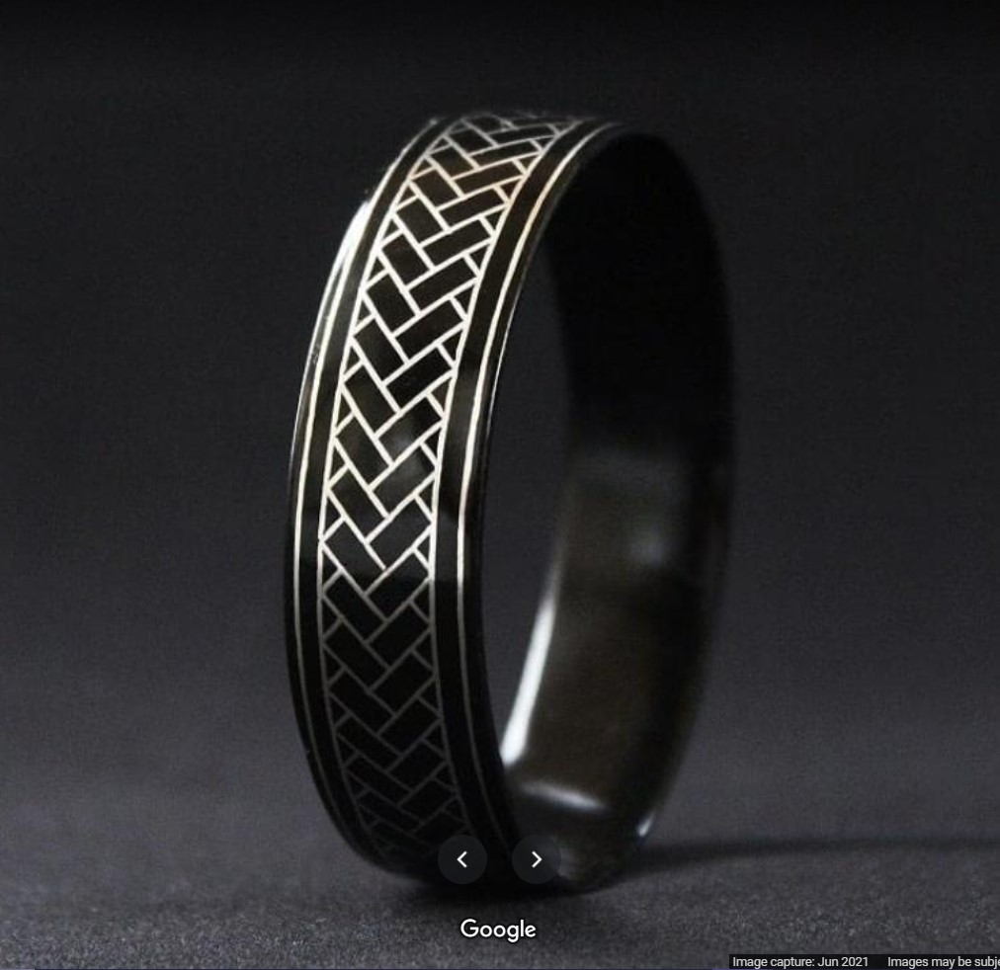
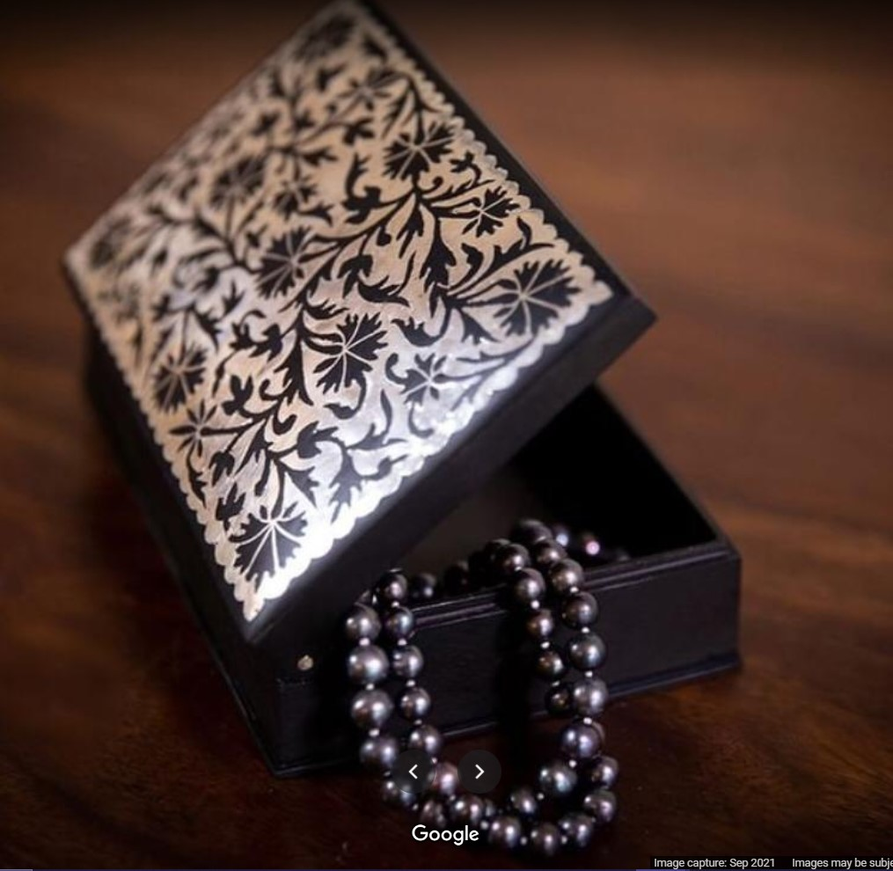

This was a project that aimed to understand the process, materials and nuances involved in making a traditional Indian craft, in our case, Bidri Metal Craft.
The group members and artisans had to interact over the course of a few weeks to fully document and record each step of the process.

This document is the compilation of the primary and secondary research of the craft - bidri. It starts with an introduction to the craft and is followed by its history, present status, and the production process in detail. The document also includes information on the selling and bidri craft.

Our objective was to meet with the artisans and learn about the craft, how they work, their environment and the conditions they produce their handicrafts in. The aim was to document the entire process from procurement of raw material to marketing techniques in the present scenario.